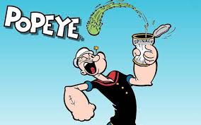
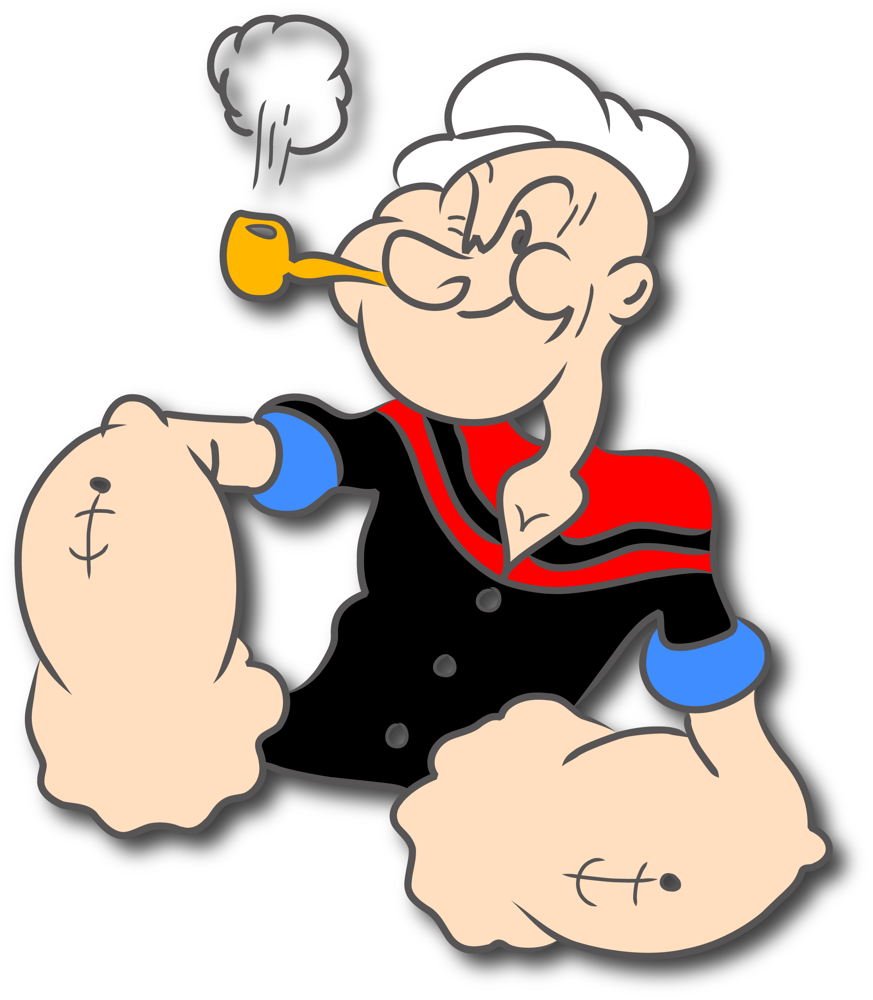
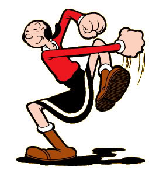
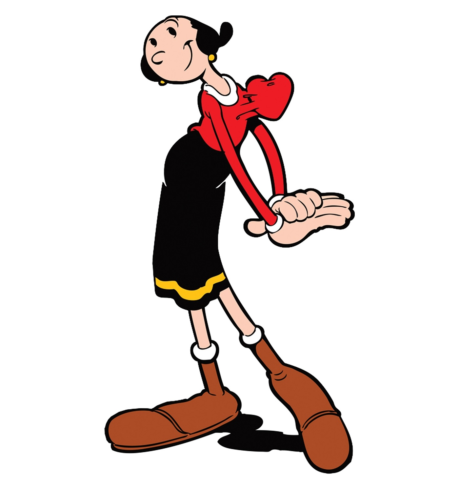
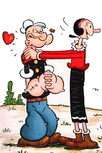
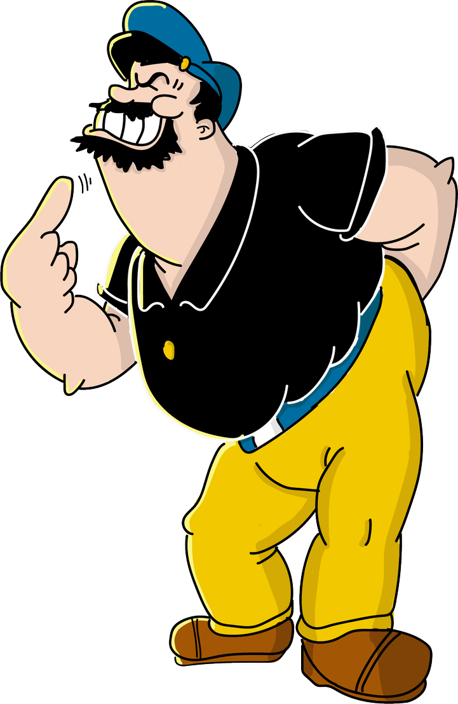
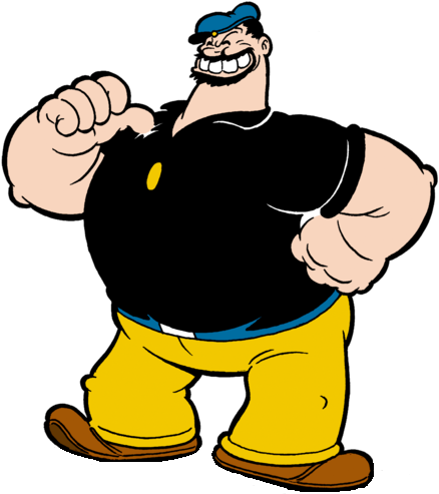
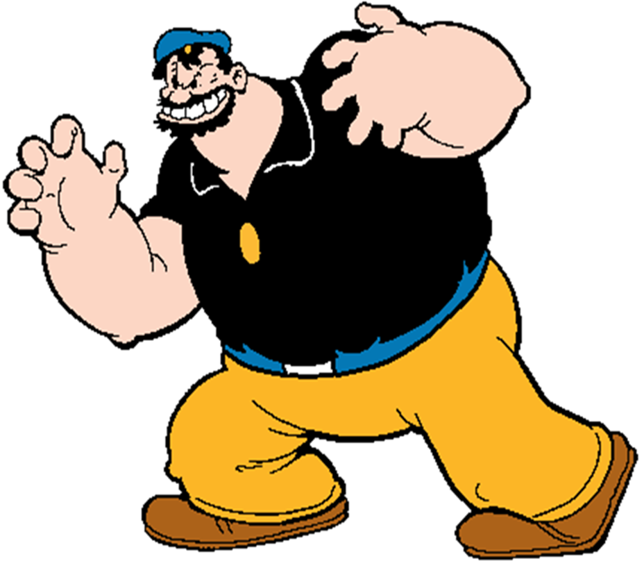

Popeye the Sailor is a cartoon fictional character created by Elzie Crisler Segar. The character first appeared in the daily King Features comic strip Thimble Theatre on January 17, 1929, and Popeye became the strip's title in later years. Popeye has also appeared in theatrical and television animated cartoons.

Popeye Eating Spinach
Popeye seems bereft of manners and uneducated, yet he often comes up with solutions to problems that seem insurmountable to the police or the scientific community.
He has displayed Sherlock Holmes-like investigative prowess, scientific ingenuity, and successful diplomatic arguments.
In the animated cartoons his pipe also proves to be highly versatile. Among other things, it has served as a cutting torch, jet engine, propeller, periscope, musical instrument, and a whistle with which he produces his trademark toot.
He also eats spinach through his pipe, sometimes sucking in the can along with the contents.

Popeye blowing his Pipe
The Main Characters of the Show



Olive Oyl is absent-minded, short-tempered, foolish, shallow, inattentive, fickle, demanding and selfish. She is usually depicted as a stereotypical "damsel-in-distress" character and often blames others for her own mistakes.
Unlike Popeye and Bluto, when she's underwater, she sounds as if she's underwater.
She frequently says "Oh, dear!" in a way that resembles film actress ZaSu Pitts.
Olive is Popeye's love interest.



Bluto is a cruel, bearded, muscular bully who serves as Popeye's nemesis and arch-rival for the love of Olive Oyl.
He usually uses brute force and/or trickery to accomplish his various goals. His voice is very loud, harsh and deep, with an incomprehensible bear-like growl between words and sentences.
Bluto, like Popeye, is enamored with Olive Oyl, and he often attempts to kidnap her.